Cultura cani
 De: La Frikipedia, la enciclopedia extremadamente seria.
De: La Frikipedia, la enciclopedia extremadamente seria.
Si partimos de que CANI significa: Capullo Adolescente No Inteligente o Camarón Absorbe Nuestra Inteligencia, concluimos que: o bien Camarón posee la inteligencia de miles de niñatos o que la cultura cani es similar a la de un simio, es decir:

Obras pictóricas creadas por los canis
Los dibujos de sus coches "tuneaos", han sido realizados por otras personas (no canis por supuesto), el cani solo ha puesto de su parte su talento innato para pagarlo, es decir, lo ha pagado robando. A parte de las fachadas de discoteca o muros de guetos decorados con graffitis cutres (dignos del Paint), los canis han realizado estas grandes obras de la pintura:
No obstante, otras personas civilizadas han creado obras con temática relacionada con los canis: [1]
Obras literarias creadas por los canis
Uno de cada mil canis sabe escribir, y pocos de los que saben hacerlo poseen "blogs", los cuales harían morir a Cervantes de un infarto de miocardio, debido a la gran concentración de patadas a la RAE, faltas de ortografía e incoherencias gramaticales, semánticas, etc. Por lo tanto encontramos estas obras literarias canis:
Obras escultóricas creadas por los canis
Los canis crean una media de una escultura por día, excepto cuando están estreñidos (entonces pueden tardar varios días en esculpir algo) o cuando tienen gastroenteritis (lo cual significaría que podrían crear varias al día). De todos modos, la falta de originalidad y variedad tanto en materiales como en formas (la solución al enigma: "escultor cani", aquí), hacen que no se puedan catalogar como grandes obras escultóricas. Por lo tanto encontramos:
Obras arquitectónicas creadas por los canis
Hasta que no empiecen a independizarse, no podremos hablar de chabolas y las únicas construcciones realizadas hasta entonces por estos seres son:
No obstante, aquí puedes encontrar un enlace a la página web de la inmobiliaria oficial de los canis: www.sukeli.com (existe).
Obras musicales creadas por los canis
Teniendo en cuenta que Camarón es gitano, el reggaetón no es obra de ellos y Haze solo crea algo que ni se parece remotamente a la música, las únicas obras musicales canis son:
Capacidad intelectual de un cani
En conclusión, mas bien poca, de hecho esto es toda la inteligencia que puede pasar por su mente:
Relación de los canis con la cultura
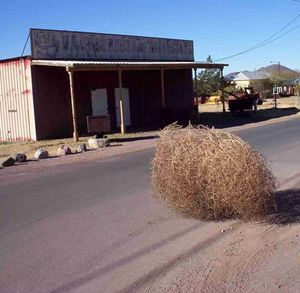 Desfile de intelectuales canis en "las 3000" (conocido gueto sevillano).
"Sueño humedo" de un cani.
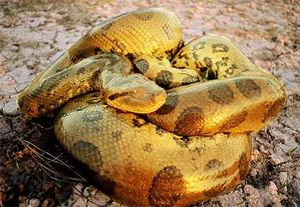 Máximo símbolo de respeto para un cani, una anaconda
chapá en oro para colgársela del cuello.
«¡Tu "hioputa", ya van tres veces... es la última vez que me haces trampas!»
~ Cani jugando a las cartas contra un niño con Síndrome de Down
«En el último siglo la actividad humana ha causado la extinción de cientos de especies... ¿por qué no han acabado con los canis?»
~ Cualquier humano sobre la existencia de los canis
«¡Eres un pijo!»
~ Cani Refiriéndose a cualquier humano
La relación de los canis con la cultura es bastante conflictiva, ya que estos seres desprecian todo aquello relacionado con la misma. Solo por el hecho de que alguien porte una carpeta o un libro por la calle, puede ser atacado por el cani sin previo aviso, porque este se siente amenazado por la cultura. Pero no te alarmes, todo animal tiene su punto débil y el cani de pro no va a ser menos. Si una manada de estos ejemplares te ha calificado como inteligente y se disponen a darte de palos (entre seis o siete), huye hacia el campus de la universidad más cercana que encuentres, ya que recientes estudios científicos han probado que hay una especie de barrera química en estos lugares (probablemente el olor a libros y a tinta), que repele a estos seres.
En cuanto a los libros, vamos a decir que el 80% de los canis no saben de su existencia ni se les ha ocurrido que puedan existir. Otro 12% ha visto algunos de lejos, principalmente si han robado en papelerías, imprentas o en bibliotecas (por no saber que estas no son negocios, pobres ignorantes). Un 4% conserva libros de párvulos, pero aun no se han atrevido a abrirlos, el resto puede que se haya leído algunos libros de 2º o 3º de Educación Primaria, tras lo cual los han usado para calzar una silla o una mesa durante años o bien han usado sus portadas para los filtros de sus porros. Hay que tener en cuenta que estos últimos forman parte de la élite intelectual cani.
Los canis también tienen una escala para medir la cultura entre los suyos, es decir, entre su manada. Es la siguiente:
- Normal: Con suerte saben escribir, es más, con suerte saben hablar (sonidos guturales aleatorios también entran en la categoría del habla). Por supuesto no han terminado la ESO, hace años que no leen nada y sus cerebros están tan atrofiados como sus Hígados.
- "Empollón de mierda": Cualquiera de los suyos que haya sido capaz de leer el informe nutricional de una lata de Coca-Cola, será calificado como un mierda y un "ufano intelectualoide desgraciao" (por supuesto no son palabras textuales). El cani será expulsado del gueto hacia el exilio, donde se lavará, estudiará y llegará a ser médico o abogado.
- Élite intelectual: Los únicos canis que son aceptados en la manada aun sabiendo leer y estando en 4º de ESO (el único ejemplo conocido se llamaba "Charli", y tenía 21 años), es aquel que usa sus conocimientos para descargar porno del eMule o tareas similares.
Iconos de los canis
Amén de cualquier machito cargado de pendientes y cadenas de oro con gorra y de visera, chandal y zapatillas, gustan de elogiar a "Camarón". Esto al parecer se debe a que como el registro medio de su forma de hablar es a voces, van por la calle imitandolo a grito pelao para con ello hacerse notar y avisar de su presencia. Este gesto es de agradecer porque así si andas despistado los notas en la distancia y les puedes dar de lado.
Los Diez Mandamientos Canis
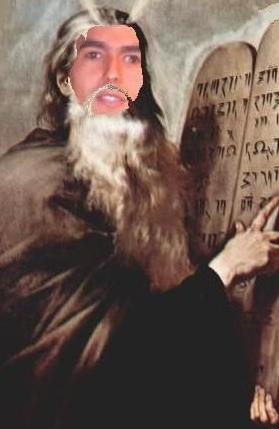 El Cani Bizco recogiendo los 10 mandamientos cani.
- Amarás a Camarón sobre todas las cosas.
- No tomarás el nombre de Camela o Haze en vano.
- Santificarás las ferias y verbenas.
- Honrarás al que creas que sea tu padre y no mencionarás la profesión de tu madre.
- No matarás por menos de 50 lero.
- No cometerás actos impuros como estudiar o trabajar.
- Robarás.
- No dirás falso testimonio ni mentirás en el Diario de Patricia ("Surmano dehate de rollos que la Patri eh la Patri").
- No consentirás pensamientos ni deseos impuros hasta que tu compare ponga el reggaetón.
- No codiciarás los subwoofer, neones o jessis ajenas.
¿Sabías que?
"
Sosio, Camarón nunca sonó tan bien" (Publicidad cani de los
iPods).
- El título de este artículo encierra una gran contradicción.
- Los canis solo resultan útiles en prácticas de Medicina Forense
- Los canis no aportaron nada al Siglo de Oro de la pintura española.
- Los canis tienen su propio baile
- Si algún vándalo sustituyese la palabra "cani" por la de "simio" en este articulo, nadie notaría la diferencia (ni ellos mismos).
- Los canis llevan 20 años confundiendo las discotecas con la universidad y el alcohol con el agua.
- El 90% de los canis no saben leer con fluidez. (Esto lo escribió un cani creyendo que 90% era una cifra pequeña y vacilar con sus colegas de haber "jakeao" la frikipedia, todo el mundo sabe que el 100% no sabe leer)
- Los canis cuentan con su propio método de reproducción asistida, el reggaetón.
- Como buenas guarras, las jessis deben peregrinar al menos una vez en la vida a la torre Agbar.
- Lo más parecido a un templo para los canis son las discotecas.
- Los canis no saben hablar griego.
- El verdadero centro de pensamiento cani se situa en el Glande.
- Fornicar con una cani o una jessi se considera zoofilia, a no ser que el sujeto en cuestión sea universitario (cosa poco probable).
- Los canis tienen un verbo propio, el verbo "javar": Yo je, tu jave, el jave, nosotros javemo, vosotros javei, ellos javen.
- Para hacer enfadar a un cani, solo debes esperar a que uno de estos especímenes se pare a tu izquierda o derecha en un semáforo. Una vez que éste lo haya hecho, simplemente debes darle al acelerador para que el sujeto entre en un estado de enajenación mental. A ser posible, repetir el mismo paso para enfurecerlo más. Cuando el semáforo se ponga en verde, el cani saldrá disparado a la velocidad de la luz y si su coche tuneado incluye un condensador de fluzo quizás tengamos suerte y se quede en el pasado con Doc y el flipao del chaleco.
Este no es Descartes, es el cani bizco.
Significados de CANI según la RAE

El cani bizco quiere reclutarte.
La RAE (Real Academia de la Lengua Española, ¿donde está la "L"? eso no lo sabe ni Dios), tras realizar un extenso estudio sociológico, psicológico y sobre todo zoológico sobre diversas manadas de esta tribu urbana, ha aceptado las siguientes acepciones para la palabra cani. Son las siguientes:
- Comepellas Asqueroso Nada Interesante.
- Capullo Adolescente No Inteligente.
- Camarón Absorbe Nuestra Inteligencia.
- Cosa Andante No Identificada. (Como los OVNI, pero en cutre/cani).
- Cagao Atontao Niñato Irreversible.
- Capullo Amorfo Normalmente no Inteligente.
- Cabroncete Amariconao, Niñato Irritao.
- Capullo de Alelí Necesariamente Idiota.
- Criminal Anti-Nuestros Intelectuales.
- Compro Alerones, Nikes e Intelecto ("Hurgente er imtelekto, aunke la nikes estarian vien").
- Cosa Anormal Nacida Inconscientemente. (Literálmente no los quieren ni sus madres).
- Cenicero Andante de Nula Inteligencia.
- Catástrofe Antihumana Nunca Investigada.
- Cultura Anormal de Ningún Interés.
- Caca Amorfa No Identificada
Los canis en la cultura audiovisual
Aquí vemos como el sujeto aprovecha su talento innnato (léase
falta del sentido del ridículo) para componer un retrato pseudoartístico.
Videos
Que se sepa, aun no se ha visto a ningún cani estudiando CAV (Comunicación Audiovisual) en la Facultad de Comunicación de cualquier universidad, es decir, que no son unos gafapastas precisamente. Es más, los canis al carecer de talento, arte, gusto, clase, sentido del ridículo, estilo, elegancia y conocimientos técnicos o artísticos, son capaces de realizar unos videos desagradables y horteras, no siendo esto lo peor, puesto que después deciden publicarlos y difundirlos en Youtube. Lo curioso es que este tipo de videos tiene su público, lo cual puede ser preocupante por dos motivos: por la ratificación del estatus de plaga que poseen los canis o porque somos nosotros los que tenemos mal gusto (bueno, lo segundo es muy poco probable). Los hay de dos tipos, el video jessi y el video cani.
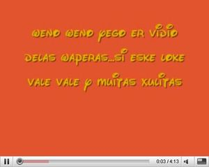 Si Cervantes levantara la cabeza...
- Video jessi: Lo primero que hace la jessi, es juntar todas las fotos de los miembros femeninos de su pandilla. La Vane, la Yasuri, la Yoli, la Yessenia, la Yulaica, la Yenira, la Nerea, la Sulaica, la Juli, la Brenda, la Yola, la Nayara, la Jordana, la Yamelia, la Jasmina, la Jenni, la Yehenira, la Yoshimitsu, etc. todas con poses "sexy-grotescas", contorsionando sus cuerpos de una manera exagerada, poniendo morritos y acompañadas por una decoración antónima a las que aparecen en las revistas de decoración y al buen gusto en general. Esta decoración está compuesta por camas deshechas, paredes desconchadas con la escayola visible (en los casos más extremos se ve incluso el ladrillo de la misma), pósters de Haze, Camarón o cualquier motivo cani pegados a la pared con cinta aislante y por último, todo tipo de objetos relacionados con la albañilería o la pintura de brocha gorda. A continuación, una vez recolectados estos abortos fotográficos o despropósitos del arte, una jessi, la líder de la manada, usa el Windows Movie Maker para empalmar las fotografías de sus amigas. Obligatoriamente debe ser el Windows Movie Maker, tampoco le vas a pedir a uno de estos seres que tenga conocimientos sobre Premiere o mucho menos sobre el Final Cut. Una vez empalmadas las fotos, añaden transiciones horteras: cortinillas de estrellas, en círculos, etc. Ahora sí, ahora es cuando entra en juego el talento dialéctico de la jessi, pues añade títulos y escritos entre las fotos, generalmente con una fuente de letra parecida a la de Disney, color negro o amarillo sobre fondo magenta, amarillo o cian. Pero como es lógico, la jessi no va a escribir cosas como: "Mi corazón palpita de alegría y se llena de júbilo y emoción, cuando pienso en mis amigas, que dulce sensación. Oh la amistad, etc.", no, la jessi escribe algo así como: "ShA PaNdA AhI La tRiBu mOnTeKiNtO PaRtIEnDo La nOsHe dE SeViLlA ArRaZaNdO POr aNdE PiSaN" o "AkI EsTaN LaH PuTeRiTaH De WeRbA QUe sUs VaN A DeJa cOn lA BoKa aBiErTa". Estos escritos suponen atentados contra la RAE o más bien contra el intelecto humano en general. Y por fin el último paso, la música. No nos vamos a extender demasiado: reggaetón (del que mas incite a refregarse por las cosas) o música dance mezclada en el cuarto de baño de un DJ anónimo para la gente con buen gusto musical.
- Video cani: Similar al tipo anterior, pero esta vez, el video es producto del amor que una jessi siente por su novio. Este amor se materializa en forma de tributo audiovisual pésimo, desagradable y hortera. La jessi coge varias fotos de ShU NiNio, aquellas en las que más estilo o chabacanería muestran (piedra de hachís, papel de fumar o porrito en mano, amenazando o con poses pijo-gays), a continuación, letras de Disney, reggaetón y listo para subirlo al Youtube.
- Video "cani rapero" (WTF??): El típico vídeo de unos canis intentando "molar" y se graban con los moviles cantando como el culo (o como ellos dicen "rapear") y subirlo al Youtube, ejemplo de éstos canis
gays "raperos": http://www.youtube.com/LosMuchaPicha veanse su vídeo de de "Anty Pijos" (¿Anti con Y? EPIC FAIL) y fijense su inteligencia xD
- Ejemplo: Bueno, no podían faltar unos claros ejemplos: Video jessi y video cani (atención a la "música" de este xD). Seguro que los dueños del video agradecen un "amable" comentario.
Fotografía
En cuanto a la fotografía, podemos decir que no difiere tanto de los trabajos audiovisuales que realiza el cani, es decir, pésimo estilo, nula calidad estética y los ardores espirituales que provocan una vez vista la obra. En este ámbito priman los collage o combinación de varias fotos con algo de texto. No están hechas con el Paint, cosa que es de extrañar, sino con un programa que parece estar diseñado para hacer estas cosas, algo así como el Canishop Pro 2.0. Hay varias combinaciones: fotos y texto, fotos diminutas con miles de frases cargantes y de significado irrelevante, solo texto, etc. Las fotos suelen ser las mismas que usan en los videos, destacando aquí las fotos de jessis con chupete o sacando la lengua, el cani agachado o en cuclillas enseñando la piedra de hachís, las fotos de sus motos y sus perros... El texto es igual o más penoso: ortografía inexistente, letra de montaña rusa, pésima sintaxis, etc. A continuación unos ejemplos:
"Dios de mi vida... ¿por qué?"
Si has pensado que tiene un buen culo, es que eres uno de ellos.
Tipo "fotos diminutas en las esquinas y texto disperso".
El Cani Bizco con todos sus complementos, paradigma del ser cani: perraco petao con cara de querer violencia, papel de fumar, nikes de muelles,etc.
Atención al pareado de rima consonante, mezcla del verso de Lorca y la chavacanería grotesca de barrio marginal a las 00:00. Sin comentarios. xDDD
Coño, desde cuándo Falete es un cani?!?!?!?!
Canis en el Hi5
En la sección fotografía puede incluirse también el superrecontrarchiconocido Jai5, donde los canis y jessies pueden expresarse con total libertad, y no ser despreciados o incluso asesinados por la comunidad. En estos espacios personales, los canis y jessis suelen marcar el territorio con expresiones como "Pah thu Kunzumoh!" o "ZimPlmMente IoP!" (lo que viene siendo una cibermeada). Por otro lado, también suelen poner las siglas de los nombres de sus amigas, de las cuales cuentan chismes, hablan mal de su ropa y de su maquillaje, pero aun así son sus amigas.
Para hacer un hi5 Jessi, necesitas:
- Antes que nada, ser guarra.
- Como nick, ponte algo relativo a ti y a tu ninfomanía, como "KonejiTah" "SexY bAby" o tu nombre, pero que acabe en -ita o en -izzz.
- En el espacio intereses, en lugar de poner cosas para que la gente normal conozca lo imbécil que eres, haz algo que solo tus amigos canis puedan entender: Llénalo de slides, de fotos tuyas con letras brillantes, imágenes que digan "Princesita", "Conejita", imágenes con efecto escarcha o cualquier efecto cutre de ti y de tus amigas... pero la cosa es que la llenes de imágenes, las mas estúpidas y llamativas que encuentres, hasta que tu hi5 se demore media hora en cargar.
- En cuanto a tu álbum de fotos, olvídate de tu cara, lo que tiene que salir aquí es tu puto cuerpo, ya que es el elemento que atrae a tus machos, o sea, los canis.
- En tu diario, escribe (o mejor dicho, copia y pega, por que recuerda: tú NO sabes leer) la letra de la canción más cursi y estúpida que hayas escuchado, aunque no sepas de que se trata o quien la canta.
He aquí un par de ejemplos, ¿por qué no los vistan y les dejan un "agradable" comentario?
Psicobiología cani, el prodigio de la naturaleza
¡Atención, tocho semicultural y pseudowikipédico, saca todo tu potencial intelectual e intenta no perderte. ¡Aviso!: pajeo=
-25% de concentración, ser cani= -100% de concentración, no lo intentes en ambos casos.!
«Mmi mmaamma ddice que ccaanni es el que hace tonnteriias»
~ Cani contandote su vida en la parada del C2.
Se podría decir, que la evolución ha dotado al cani de una anatomía específica para adaptarse a la dura vida en los guetos, constituyendo también la base de su economía y sociedad. El sigilo para el robo (que se lo digan a los del Eroski), la reproducción "a lo conejo" para defenderse con superioridad numérica (vulgarmente conocido como "molerte a palos entre seis o siete"), su hábil olfato para no olerse a sí mismos y muchos otros rasgos, son las características de este curioso organismo al que llaman cani.
Aparato locomotor
- Extremidades: En las patas de los canis, encontramos fina y sigilosa a la pezuña derecha, diestra en el arte del robo, pudiéndote sustraer una cartera aun si la tienes dentro de los
cohones pantalones (las jessis la obtendrían de otro modo en este caso). Por otro lado, la izquierda posee un par más de falanges que las hacen expertas en el arte de robar vegetales: aceitunas, melones, ajos, sandias, etc, (haciéndole la competencia a sus parientes cercanos, los gitanos). Las pezuñas traseras, les servirían a los canis para escalar paredes y elementos que les permiten robar donde un humano medio ni se imaginaría.
- Cabeza: Aquí se encuentra el cerebro del cani (estudiado más adelante). ¡Ojo!, no su centro de pensamiento, la cabeza le sirve al cani como soporte para sus "pelaitos" y como casco biológico de serie.
- Tronco: Aquí si se encuentra su centro de pensamiento.
Cerebro
«!Joder que asco¡ mi maestro de anatomía trajo el otro día a clase un cerebro. No se de que animal sería, pero juzgué por su reducido tamaño... que debía ser de un cani»
~ Universitario estudiando un cerebro de simio.
Ante todo aclarar que los canis si tienen cerebro. No obstante el cerebro cani es un 46% más pequeño que el de sus parientes biológicos más cercanos (los humanos según los más optimistas y los simios inferiores según los más pesimistas realistas). Esto es debido a que el buen cani de pro, posee una bóveda craneal cinco veces más gruesa que el resto de los humanos, una especie de casco biológico de serie. Posiblemente la evolución haya dotado al cani de este prodigioso adelanto, para adaptarse a la conducción temeraria y para que puedan hacer sus notables pamplinas moteras. Hay que decir que este órgano, no es el centro de pensamiento del cani, pues este se encuentra un metro más abajo (véase polla). Además, este se ha agudizado y adaptado a la mala vida cani, en detrimento de la creatividad, la originalidad, la memoria, etc. El cerebro cani se divide en las siguientes partes:
Lóbulo frontal
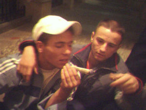 Sus actividades culturales favoritas.
El lóbulo frontal del cerebro cani controla sus sentidos, los cuales se guían por una máxima inquebrantable: “buscar y beber o esnifar”. Distinguimos los siguientes sentidos:
- Oído: El oído cani solo percibe cuatro tipos de ondas sonoras, aunque a veces pueden oír palabras que no estén codificadas mediante estas frecuencias de onda, por ejemplo: leru (plural: lerus), surmano (vocativo), porro, jessi, “kely”, alerón, etc, con las cuales deberá bastarse para entablar comunicación con su manada. Las cuatro ondas mencionadas anteriormente son:
- Las "Reggaetonianas" (reggaetón): Les hace emigrar hacia las discotecas o zonas de reproducción canis.
- Las "Camelianas" (Camela): Para un cani, Camela significa: feria, recreativos o amor.
- Las "Camaronianas" (Camarón): Usan como excusa el sufrimiento que este gran cantante transmite mediante su música, para no trabajar. Ejemplo de la "lógica caniana": Camarón sufre, yo no trabajo. Es más, si Camarón sufre, yo no trabajo y además me voy a delinquir.
- Las "Hazianas" (Haze): Bloquea a las anteriores y al cani en general.
- Vista: El buen cani solo percibe seis colores, y cada uno de ellos lo asocia a un significado específico, para actuar según lo que vea. Por ejemplo:
- Rojo: Pijo o friki. Significado: peligro. Acción: Atacar.
- Verde: Jessi, mujer. Significado: Reggaetón, bar, discoteca, reproducción. Acción: fornicar.
- Amarillo: Droga, alcohol y alimentos. Significado: Hambre, mono. Acción: ingerir, beber, esnifar, fumar.
- Azul: Agua. Significado: Limpieza, salud. Acción: Evitar.
- Negro: Catedráticos, universitarios, estudiantes, libros, etc. Significado: Cultura, peligro de aprendizaje. Acción: Huir, matar.
- Blanco: Carteras,
oro, monederos, lerus, bolsillos (secretos in extremis). Significado: Riquezas. Acción: Pedir, robar.
Aquí podras encontrar un ejemplo de la visión cani.

La toques donde la toques, ella se pondrá caliente y tú estarás perdido. Te seducirá con sus feromonas para tener sexo contigo contra una farola y utilizará tu semen para perpetuar la línea de sangre cani.
- Tacto: En cuanto al tacto, hay que hablar de un organismo que se define en biología como el “cani hembra”, “paia ahitanarum” o simplemente como jessi. Debemos empezar por saber que las mujeres normales tienen en algunas zonas de su piel una mayor sensibilidad, pues en estas zonas se concentra un mayor porcentaje de terminaciones nerviosas. Esto traducido de la Wikipedia a la Frikipedia, quiere decir que hay zonas de la mujer, que al tocarlas las vuelven aptas para fornicar. En las mujeres normales, estas zonas ocupan el cuello, los labios, etc (ya está, que te pones cachondo…), pero lo curioso es que las jessis están recubiertas enteramente por este tejido erógeno, lo cual explica que estén siempre calientes y dispuestas a fornicar. En cuanto al cani macho, este tejido solo recubriría su verdadero centro de pensamiento o glande, pues el resto de su cuerpo es tan vasto como su comportamiento social.
- Gusto y olfato: En cuanto a estos sentidos, decir que el cani invierte los sabores y los olores que percibe. Por ejemplo, esto hace que cuando huelan a jazmín, ellos perciban olor a mierda y que cuando se huelan a sí mismos, perciban olor a jazmín. Este mecanismo biológico les protege de su propio olor y de las pseudocomidas (hablando de alimentos) que hacen las jessis adultas. También cabe destacar que los canis serían capaces de detectar el suave y fresco aroma que desprenden los cultivos de marijuana de Colombia, hecho que les ha servido para trabajar en el aeropuerto de Sevilla oliendo maletas, colaborando codo con codo con los perros de la unidad "K9". En teoría, el olfato también es la base de la conducta sexual de las jessis, pues para elegir parejas se guían por el olor a gasolina que desprenden sus posibles víctimas, el cual las excita sobremanera, ya que si un cani apesta a gasolina, significa que tiene coche o moto y un 50% más de posibilidades de gustarle a una jessi. Incluso algunas leyendas urbanas cuentan que algunas de ellas celebran sus despedidas de solteras en gasolineras.
Lóbulo parietal izquierdo
El cani usa esta parte del cerebro como reproducctor de MP3 incorporado. Solo tiene 18MB de capacidad y lee únicamente a la trinidad cani: Camarón y los dos de Camela.
Lóbulo parietal derecho
«Una característica muy habitual en los canis es que lo que no tienen de cerebro lo tienen de saliva.»
~ Santiago Ramón y Cajal sobre la anatomía cani
Esta parte del cerebro, la usan como depósito para el almacenaje de saliva. Es más bien una extensión de las glándulas salivales del cani y es lo que le permite pasarse la mitad del día escupiendo como un dromedario.
Lóbulo Occipital (lenguaje)

El "Cani Bizco", famoso filólogo, pensador y dramaturgo
cani.
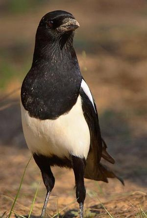 La Urraca, pariente genético del
cani, con ellos comparte el tamaño de su cerebro y el gusto por los objetos brillantes.
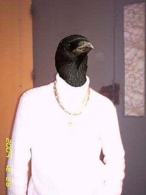 ¿Ves como no hay tanta diferencia?
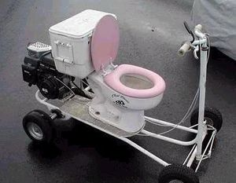 Esta debería ser la moto oficial de los
canis, pues confirmaría su estatus de "cagaos".
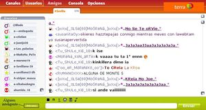 Convención de subnormales (literalmente) en un chat "cualquiera".
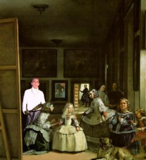 El Cani Bizco, el único que destaca.
«E paSao xTo eSto.Grazias A Dio0s Ya enc0ntre ar niñ0 k meSta aziend0 Felis..Te am0 Mi PuteRit0»
~ Comentario real de una Jessi (lo juro) escrito en un video del Youtube.
«La Filosofía de un cani es igual a la capacidad emocional de un ladrillo»
~ José Ortega y Gasset sobre los canis.
El cani usa esta parte del cerebro como centro de su lenguaje.
- Comunicación cani: La capacidad dialéctica del cani, se podría definir como la velocidad de tu conexión a internet el día que mas salido estás, es decir: limitada o nula (alianza “eMule + Ley de Murphy”). Lo primero que vamos a estudiar, es el esquema comunicativo de cualquier ser humano o simplemente no cani:
- Emisor ---> Mensaje ---> Receptor.
Hasta aquí todo claro ¿no?, pero en el cani, este esquema sufre varias modificaciones:
- Cani ---> Amenaza ---> Víctima.
- Cani ---> Amenaza de violación ---> Jessi.
- Cani ---> Hostia ---> Víctima.
- Gitano ---> Hostia ---> Cani.
- Gramática y vocabulario cani: El cani medio, solo usa frases simples o como mucho compuestas coordinadas copulativas, y compuestas subordinadas nominales. Esto traducido, quiere decir que solo usan frases sencillas y cortas, unidas por "y", "que" y "o", para que sus débiles circuitos neuronales no se sobrecarguen. Su vocabulario oscila entre las 40-50 palabras (51 cuando aprenden a decir "filogénesis") y suelen estar relacionadas con campos semánticos tan diversos como:
- * Drogas y alcohol.
- * Tunnig: Alerón, buga, asiento de atrás, etc.
- * "Vocabulario bélico de barrio": Mi primo, paliza, hostia, etc.
- * Trabajo: "Surman", "damun" y "leuro".
- * Y como no: surmano/suprimo.
- Ejemplo práctico: Lo bueno que tiene el cani, es que es fácil de bloquear mentalmente y podemos echarnos unas risas comprobando como intentan seguir en vano, el ritmo de una conversación medianamente inteligente. Cuando el cani se bloquea suele responder de cinco formas distintas:
- Cabreándose e insultando.
- Riéndose en plan "no sé lo que dices y te sigo el rollo por si acaso".
- Intentando hacerse los inteligentes.
- Dando pena.
- Huyendo.
A continuación vamos a ver unos casos prácticos que incluso tú puedes realizar. Solo tienes que meterte en el chat del Terra, en la sala de Sevilla (esto no es spam, ya que te aconsejamos diréctamente que no entres, pues está minado de canis) y entablar conversación con uno de estos seres. Te aconsejamos por último que no intentes hacerlo físicamente, pues intentarán agredirte entre cinco o seis (lo típico). Aquí puedes encontrar unos ejemplos de dialéctica cani:
Caso número 1:
-Ana: "No yo estoy en la faculta, porque lo preguntas?"
-ShU_MoReNo_FaShOn: "xDDD, yo stoy en er trabajo y me he traio er portatil" -El iluso quiere hacernos creer en vano, que trabaja en una oficina-.
-Sevillano17: "Que te has llevao el portatil a recoger acitunas??? xDDD"
- ShU_MoReNo_FaShOn: "Tu ioputa que ise? a ve i tiene coone y me lo dise en la cara so maricona, etc." -Cabreo-.
- ShU_MoReNo_FaShOn: "Illo sosio q yo tambien soy persona sensible y siento sentimientos, dejame ya ermano." -Intentando hacerse los inteligentes-.
- ShU_MoReNo_FaShOn: "Surmano deame que mi pare se murio hace na y stoy chungo." -Dando pena-.
- * ShU_MoReNo_FaShOn ha desconectado (Connection resset by peer). -Ha huido-.
Caso número 2:
-ShU_MoReNo_FaShOn: "Lo hippi esto no son malahe ni na sosio, conta un chiste o argo io xDD".
-Sevillano17: "A ver si te gusta este: Van dos putas en una moto y se cae tu madre".
-ShU_MoReNo_FaShOn: "xDDDDDDDDDDDDDD" -Es evidente que no lo ha entendido-.
-ShU_MoReNo_FaShOn: "x'DD Y daonde saca aora a mi mare hippi??".
-Sevillano17: "De la moto ;)".
-* ShU_MoReNo_FaShOn ha desconectado (Connection resset by peer).
Caso número 3:
-ShU_MoReNo_FaShOn: "Surman pasame a mi movi la cansión der Haze esa de potensia pa tu carro".
-Se_RuBiKoH_OrOh: "Enga sosio ensiende er blutu y te la mando, el Haze e un crá illo".
-ShU_MoReNo_FaShOn: "Enga ya que llevo media hora esperando ome!! x'DD"
-Se_RuBiKoH_OrOh: "Oju illo si te la estoy mandando, tu donde esta ermano??"
-ShU_MoReNo_FaShOn: "Yo aki en Sevilla iho x'DD"
-Se_RuBiKoH_OrOh: "Aro sosio por eso no funsiona porke yo estoy en dos ermana x'DD"
-ShU_MoReNo_FaShOn: "Aro ioputa si no te sale a la ventana desde tan leho no funsiona :S"
-Se_RuBiKoH_OrOh: "x'DDDD estoy empanao ermano, e verda me voy a asoma ar balcon"
-Shu_ALbA_XuLa: -(¡Atención!)- "No illo pa tan leho te va a tene que sali a la calle em?"
Esta conversación se basa en esa idea que tienen los canis de que el sistema "Bluetooth" tiene un alcance ilimitado. Desde aquí hacemos un llamamiento a todos los canis para que acepten de una vez por todas que el alcance del "Bluetooth" no es infinito.
Caso número 4:
Conversación entre un "HOYGAN" y un cani (destrucción neuronal total):
-Se_RuBiKoH_OrOh: "Que ase sosio?"
-ALVERTO: "HOYGAN RUVITO TU SAVES KONSEGIR LA KONTRASEÑA DEL MSN DE HALGIEN"
-Se_RuBiKoH_OrOh: "x'DDD que va sosio, er robe si sabe desas cosas"
-ALVERTO: "HOYGAN PRO SI BOS ME DIJISTE KE KONCEGISTE LA DE TU NOBIA"
-Sa_RuBiKaH: "ke dice er jipi ese, illo tu ma hecho eso?"
-Se_RuBiKoH_OrOh ha desconectado (Connection resset by peer).
-ALVERTO: "HOYGAN KE KAGADA"
Observese como el cani parece un culto escritor al lado del "HOYGAN", estimamos un Coeficiente Intelectual de -4 para el "HOYGAN" y por encima el cani con uno de: -3. Si el cani se topa con un "bengatio" (variedad del "HOYGAN") las consecuencias pueden ser aun más graves (el bloqueo general del internet por ejemplo). El "bengatio" se distingue por empezar las frases con la "perifrasis HOYGAN": "benga tio". Ejemplo: "Benga tio pasam el jal laif 2 en un disket".
Aparato reproductor
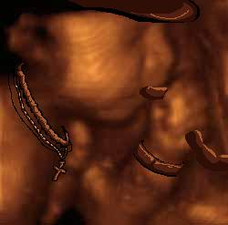 Feto cani en el tercer mes de embarazo, ya se aprecian las primeras cadenas de oro y como el sujeto intenta fumarse el cordón umbilical.
«Embarazo significa problema u obstaculo, esta definición no se hace tan cierta hasta que te quedas preñada de un cani... lo siento mucho, la ecografía lo ha confirmado.»
~ Ginecólogo comunicandole a una mujer que su hijo va a ser cani.
«La mayor satisfacción que un padre puede sentir, se produce cuando un hijo dice por primera vez "surmano" o "suprimo".»
~ Padre cani orgulloso de su hijo cani.
Se cree que el embarazo de un cani dura unos cuatro meses, pues la formación del cerebro es la parte más compleja en todo embarazo, además nacen en camadas de seis o siete. Esto les permite jugar con la ventaja de la superioridad numérica, compensando lo "cagaos" que son, ya que por cada humano nacido nacen siete canis y esta proporción también se observa en las peleas donde estos niñatos se involucran (6 canis contra un transeúnte, 12 contra 2, 18 contra 3, etc, da igual que busques colegas o que vayas acompañado, ellos serán más). En cuanto al parto, véase parto cani. Aunque aquí vamos a exponer varias teorías sobre el embarazo y el parto cani. La primera corresponde a los inicios de la especie, cuando su cultura aun no estaba formada, es decir, la situación que se expone en el Génesis (paraíso). La segunda corresponde a los embarazos producidos en el ambiente cani ya formado, es decir, la situación que la Biblia expone en el Apocalipsis.
- Teoría numero 1: Un sujeto determinado ingiere la adecuada cantidad de alimentos, tras lo cual este atravesara el esófago hasta llegar al estomago. En dicho lugar, el material ingerido se mezclará con ácido clorhídrico y otros jugos gástricos, tras lo cual pasara al intestino delgado, no sin antes mezclarse con la bilis y los jugos pancreáticos. Una vez que el material llega al intestino grueso ya podemos hablar de cani, pues los ojos ya están formados, ya se aprecian las primeras cadenas de oro y el cani empieza a pegar sus primeras hostias (provocando retortijones). A las 24 horas, el cani es expulsado por el recto, circula unos cuantos kilómetros por las cañerías hasta llegar al río desde donde se prepara para invadir la ciudad pidiendo leros y dando palizas. Esta teoría es la más extendida, pues confirmaría el estatus de mierda del cani.
- Teoría número 2: Esta teoría se compone de varios pasos que tienen que ocurrir entre un cani (desde ahora "Sujeto 1") y una jessi (desde ahora "Sujeto 2"), para que se produzca el embarazo cani (o desgracia). Estos son:
- A Sujeto 2 le gusta la moto o coche de Sujeto 1.
- Sujeto 2 conoce entonces a Sujeto 1.
- Sujeto 1 pone reggaetón en su coche "tuneao" y enciende sus neones para impresionar a Sujeto 2.
- Sujeto 1 fornica con Sujeto 2.
- Sujeto 2 y familia descubren que está preñada.
- Familia de Sujeto 2 inicia una batalla a puñaladas contra la familia de Sujeto 1.
- Abuelo de Sujeto 1 muere de un infarto de miocardio.
- Abuela de Sujeto 2 se gasta su pensión en biberones y cadenas de oro para el futuro cani.
- Tras cuatro meses, Sujeto 2 da a luz a la criatura.
- Las enfermeras del centro médico le dan el pésame a Sujeto 2.
- Sujeto 1 le da una paliza a las enfermeras y le roba la cartera al médico.
- Sujeto 1 y Sujeto 2 huyen del centro médico junto a la criatura.
- Teoría número 3: A continuación, vamos a relatar un suceso horroroso, una metamorfosis espeluznante, un accidente que transformó la feliz vida de una criatura en un infierno y un perpetuo sufrimiento para su prójimo, mientras él, aislado en su nueva condición de ignorante, era ajeno a todo. Todo comenzó cuando el sujeto A acudió al médico:
-Sujeto A: "Hola buenas, mire, yo querría someterme a una operación para ser como Muhammad Ali, el boxeador."
-Médico: "Bueno, sería posible, sólo deberíamos oscurecerle la piel un 60%, reducirle su capacidad cerebral en un 30%, por de todos los golpes que este señor se habrá dado en la cabeza y aumentarle su pene en un 40%. ¿Está seguro de que desea continuar?"
-Sujeto A: "Si, por favor. Gracias."
Total, Sujeto A se despierta en la mesa de operaciones y el cirujano le dice:
-Médico: "Mire, lo lamento muchísimo, pero nos equivocamos en las proporciones y le hemos oscurecido la piel un 30%, le hemos acortado el pene un 40% y le hemos quitado el 80% de su capacidad cerebral."
A lo que Sujeto A responde:
-Sujeto A: "¿Que dise surmano? Si yo estoy de lujo, estoy to flama ¿jave o no? Enga sosio, ya m'esta dando la cartera y to lo que lleve o te rajo."
A partir de aquí, Sujeto A comenzó a reproducirse y el final ya lo conocemos.
Código legislativo cani

Cuidado, te está atacando.
El siguiente texto corresponde a un fragmento del Codigo Cani, escrito por Su Jack Reshulón Sparrow o Er Robe despues de ver "Piratas del Caribe" (los canis también tienen su vena friki).
Ley número 1 (peleas)
- En una pelea el número de los nuestros siempre tiene que ser cuatro veces superior al de los contrincantes o víctimas, por ello nos organizaremos en manadas de ocho o más al patrullar las calles.
- Los sujetos para atacar estan ordenados por este nivel de preferencia: niños, viejos y estudiantes, absteneos de pelear con grupos de mas de dos adversarios.
- Cuando vayamos perdiendo una pelea jamas dejaremos a un compañero cani atrás, por eso deberemos huir marcha atras y dejarlo delante.
Ley número 2 (trabajo)
- Se evitará estudiar o trabajar a toda costa, muchos lo intentaron y aun no han vuelto.
- Si el Estado facha este, se niega a daros una pensión, elegireis entre estas profesiones: ladron, gorrilla o prostituto. Las jessis podrán elegir entre esteticienes, peluqueras o <censored>.
- En el caso de ser gorrillas, debereis actuar del siguiente modo:
- * Si el conductor del coche aparcado os da 1 euro, rayadle el coche con una llave.
- * Si os da 50 centimos rayádselo con una llave inglesa.
- * Si os da 20 centimos, cagad en el capó.
Ley número 3 (tráfico)
La señales de tráfico son el instrumento del hombre payo para coartar nuestra libertad en la carretera, por ello debemos evitarlas a toda costa. No obstante tendréis que tener en cuenta el significado de las mismas:
- "Ceda el paso:" que lo ceda él.
- "Stop:" Acelerar en Ingles. (el Inglés es una lengua sueca).
- "Prohibido adelantar: No dice nada de adelantar por la derecha... asín que palante.
- "Semáforos:" Verde: pasar, amarillo: pasar, rojo: pasar.
- "Prohibido hablar por el móvil o fumar mientras conduces:" Vale hacerlo por separado.
Otras normas son:
- Si veis a un conductor con una "L" detrás, pitadle, insultadle, tiradles bujías al cristal, etc.
Arte Cani
Bueno, aquí podemos apreciar que la “cultura” cani también tiene arte, ya sea en el campo de la fotografía o en el de pedir leros por la calle:
Véase la originalidad que desprende la cani hembra en sus distintas, y, diferentes poses de la fotografía. Se dice que entre sus hobbys, aparte de ir mendigando por la calle pidiendo dinero con cara de yonki o enrollarse petas intentando ganar reconocimiento por parte de los de su especie, también les gusta el arte, la fotografía y todo eso. Los patrones que siguen al hacerse una foto es poner la cámara bien alta, lo máximo que puedas estirar el brazo, retuércete como un gusano hasta que te hagas daño en el espinazo, que se vea bien esa talla 40 de sujetador. Después, pones cara de prosti o de Derek Zoolander y le das al botón (no, joder, a ese no, ¿ni una foto sabemos hacer?). Y ale, ya tendremos nuestra foto CANI la cual podremos colgar en nuestro fotolog o melatraefloj en el que, aparte de nuestra imagen, también podremos poner diversas idioteces aderezadas por un “suermanillo”, “locoh” o "reshulonah"(reshulong en el caso masculino, sin olvidarnos de la 'g' final, la cual le da todo el sentimiento cani),y SiN oLvIdAr lA LeTrA dE mOnTaÑa RuSa lA cUaL tE hAcE pEnSaR qUe La PeRsONa qUe lO EsCrIbE TiEnE MuChO TiEmPo LiBrE…
¡Ah!, se me olvidaba, los canis “macho” también pueden seguir estos patrones, pero, en mi opinión, serian tachados de julais y echados inmediatamente del grupo. (No es homofobia, así es el reino animal, y mas en la especie cani.)
Una vez echas las fotos para el DNI, también es bastante común hacer un collage lo más hortera posible, con muchos colores para que produzca epilepsia, es bastante común enconrar montones de collages en sus fotologs o metroflogs, ya que eso aumenta el status en la manada.
Otros enlaces culturales canis
Véase también
Enlaces externos
Autor(es):
- Krusher
- Fordus
- Doctor grijander
- Homer Tunder
- Epikurolibre
- Roms
- Guilfer
- Jokergranada
- Khazike Khashondo
- ElInventor
Frikipedia 2005-2016, Licencia
GFDL 1.2 - Extraído por FrikiLeaks


{kind=link}